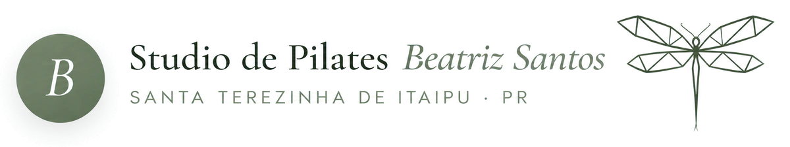

Agendar aula experimentalChamar no WhatsApp Como chegarAbrir no Google MapsToque na região que mais incomoda
Onde você sente desconforto?
Toque na parte do corpo que incomoda e veja os vídeos para ela.
Arraste para girar
ou escolha pela lista
Dor nas costas
Escolha o tipo de desconforto que mais parece com o seu e veja uma sequência de Pilates pensada para ele.
Os vídeos têm caráter informativo e não substituem avaliação médica ou fisioterápica. Se a dor for forte, persistente, vier com formigamento, perda de força ou surgir após uma queda ou lesão, procure um profissional de saúde. Na aula experimental, conte como você está, para os exercícios serem adaptados a você.
Dor no pescoço
Escolha o tipo de desconforto que mais parece com o seu e veja uma sequência de Pilates pensada para ele.
Os vídeos têm caráter informativo e não substituem avaliação médica ou fisioterápica. Se a dor for forte, persistente, vier com formigamento, perda de força ou surgir após uma queda ou lesão, procure um profissional de saúde. Na aula experimental, conte como você está, para os exercícios serem adaptados a você.
Dor no ombro
Escolha o tipo de desconforto que mais parece com o seu e veja uma sequência de Pilates pensada para ele.
Os vídeos têm caráter informativo e não substituem avaliação médica ou fisioterápica. Se a dor for forte, persistente, vier com formigamento, perda de força ou surgir após uma queda ou lesão, procure um profissional de saúde. Na aula experimental, conte como você está, para os exercícios serem adaptados a você.
Dor no joelho
Escolha o tipo de desconforto que mais parece com o seu e veja uma sequência de Pilates pensada para ele.
Os vídeos têm caráter informativo e não substituem avaliação médica ou fisioterápica. Se a dor for forte, persistente, vier com formigamento, perda de força ou surgir após uma queda ou lesão, procure um profissional de saúde. Na aula experimental, conte como você está, para os exercícios serem adaptados a você.
Região
Os vídeos têm caráter informativo e não substituem avaliação médica ou fisioterápica. Se a dor for forte, persistente, vier com formigamento, perda de força ou surgir após uma queda ou lesão, procure um profissional de saúde. Na aula experimental, conte como você está, para os exercícios serem adaptados a você.
O que o Pilates pode trazer
Toque em um tema e veja um vídeo curto explicando.
Os benefícios variam de pessoa para pessoa. O Pilates não substitui acompanhamento médico: converse com seu profissional de saúde antes de começar, se tiver alguma condição ou dúvida.
Modalidades
Como começar
- 1Aula experimental
Conheça o studio e o método. [condições da aula experimental / avaliação — a definir]
- 2Escolha seu plano
Definimos juntos a frequência e o horário que cabem na sua rotina.
Melhora postural
Consciência do corpo ao sentar, ficar em pé e se movimentar.
Conteúdo informativo. Os resultados variam de pessoa para pessoa e o Pilates não substitui avaliação médica ou fisioterápica. Na aula experimental, conte como você está, para os exercícios serem adaptados a você.
Tônus muscular
Fortalecimento gradual da musculatura, com atenção ao centro do corpo.
Conteúdo informativo. Os resultados variam de pessoa para pessoa e o Pilates não substitui avaliação médica ou fisioterápica. Na aula experimental, conte como você está, para os exercícios serem adaptados a você.
Equilíbrio
Exercícios de controle e estabilidade para se sentir firme nos movimentos.
Conteúdo informativo. Os resultados variam de pessoa para pessoa e o Pilates não substitui avaliação médica ou fisioterápica. Na aula experimental, conte como você está, para os exercícios serem adaptados a você.
Mobilidade
Movimentos amplos e controlados para o corpo se mover com mais liberdade.
Conteúdo informativo. Os resultados variam de pessoa para pessoa e o Pilates não substitui avaliação médica ou fisioterápica. Na aula experimental, conte como você está, para os exercícios serem adaptados a você.
Alívio do estresse
Respiração e atenção ao movimento ajudam a desacelerar e a se sentir melhor.
Conteúdo informativo. Os resultados variam de pessoa para pessoa e o Pilates não substitui avaliação médica ou fisioterápica. Na aula experimental, conte como você está, para os exercícios serem adaptados a você.
Encontre o seu horário
Turmas e horários
[Dias e horários das turmas — a definir]
Planos e valores
[Valores — a definir pela Bia]
Atendimento no WhatsApp
[Horário de atendimento — a definir]
Prazer, Bia
Eu sou a Beatriz, a Bia, instrutora do Studio de Pilates Beatriz Santos. Aqui o atendimento é próximo e cuidadoso: cada aluno é visto como único, com seu corpo, sua história e seus objetivos.
Minha proposta é que você se sinta bem-vindo(a) desde a primeira aula, num ambiente tranquilo, para se movimentar com segurança e orientação.
Formação
[Formação e CREFITO nº ______ — a confirmar com a Bia]
Venha nos visitar
Cidade
Santa Terezinha de Itaipu · Paraná
Endereço
Rua Renato Montemezzo, 165
Centro · CEP 85875-024
Abrir no mapa
Ver rota no Google Maps
(45) 99979-5418
fisiobeatrizsantospilates@gmail.com